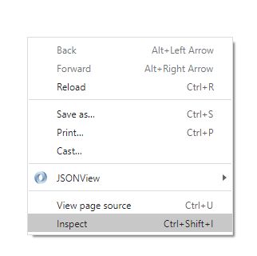

Console Screen
Visual Studio code is an IDE created by Microsoft
A console screen is used to check the html before coding on html
Steps to open a Console Screen
Right click on the screen
Click on Inspect

Click on Console